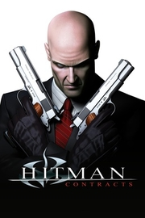

 |
|
| Tiempo de juego | No Jugado |
| Última actividad | Nunca |
| Añadido | 20/11/2025 14:00:06 |
| Modificado | 20/11/2025 14:06:23 |
| Estado de finalización | Not Played |
| Librería | Playnite |
| Fuente | 2TB GAS |
| Plataforma | Microsoft Xbox PC (Windows) Sony PlayStation 2 |
| Fecha de lanzamiento | 20/04/2004 |
| Puntuación de la Comunidad | |
| Puntuación de la Crítica | 78 |
| Puntuación de usuario | |
| Género | stealth |
| Desarrollador | IO Interactive |
| Editor | Eidos Interactive |
| Característica | Single-player |
| Enlaces | Wikipedia MobyGames |
| Tag | [Game Engine] Glacier [People] composer: Jesper Kyd [People] writer: Greg Nagan |
Hitman: Contracts is a 2004 stealth video game developed by IO Interactive and published by Eidos Interactive for Microsoft Windows, PlayStation 2 and Xbox. It is the third installment in the Hitman video game series, and serves as both a remake of Hitman: Codename 47 (2000) and sequel to Hitman 2: Silent Assassin (2002), incorporating gameplay elements introduced in the latter into missions from the first game, which have been remastered with enhanced graphics. The game also includes several new missions, which serve as flashbacks experienced by the cloned assassin Agent 47 after almost being killed on a failed mission.
Hitman: Contracts was met with generally positive reviews; praise was directed at the improved gameplay elements, graphics, soundtrack, darker tone and atmosphere, while criticism was reserved for the lack of significant improvements and the familiarity with the previous two games. As of April 2009, the game has sold around 2 million copies. High-definition ports of Contracts, Silent Assassin, and the sequel Blood Money were released on PlayStation 3 and Xbox 360 in January 2013 as the Hitman HD Trilogy.
In Hitman: Contracts, players control protagonist Agent 47 from a third-person perspective, who is sent to various locations across the globe to assassinate specific targets. A wide array of weapons can be used, from kitchen knives, assault rifles and handguns to belt-fed machine guns. While stealth and subterfuge is encouraged, the game allows the player to take a more violent approach and gunfight their way to their mission goals. As players progress through the game, they can collect the various armaments found in the levels, allowing them to be used in future missions. Aside from the more straightforward ways of killing targets such as gunplay and strangulation, several missions allow the player more subtle ways to eliminate hits, such as judicious use of poison, or arranging "accidents" like a heat-induced heart attack inside a sauna.
Players are rated on their performance based on several factors; key among which are the number of shots fired, non-player characters (NPCs) killed (and whether they were armed adversaries or innocents), and the number of times the guards are alerted. The lowest rank is "Mass Murderer", which is awarded to players who kill large numbers of NPCs in the pursuit of their target and do not use stealth. The highest rank is "Silent Assassin", which is earned when the player accomplishes their mission without being detected, and generally without killing anyone other than the intended target(s).
Contracts continues the trend of context sensitive actions, which means that one button is used in multiple situations for multiple uses. For example, when the player is near a door, the context sensitive button will allow the player to perform door-relevant actions such as keyhole-peeking, lock picking, or if allowed, simply opening it. When the player is near an unconscious or dead NPC, the same button will allow the ability to either acquire the person's outfit, or drag the body to an area where it will not be found by various types of guards.
Along with the context sensitive button, the "Suspicion Meter" returns as well; this meter informs players of how close they are to blowing their respective cover. Actions like excess running indoors, brandishing weapons openly, residing in restricted areas, or sneaking can raise suspicion. Proximity will also usually raise the meter. If the "Suspicion Meter" fills, guards will open fire on sight of the player and the current cover becomes useless. If the guards discover a fallen body, or if an unconscious person wakes and alerts them, the "Suspicion Meter" will raise much faster than it would otherwise.
Disguises can be either found in the environment or taken from the bodies of male NPCs. Depending on the disguise, the player can then access areas restricted to most individuals in a level. These disguises can be seen through by guards, as stated above; e.g. if guards in a level are all wielding shotguns, a player dressed as a guard but not similarly equipped will draw more suspicion. Also, certain behaviors (like picking locks) will cause guards to see through a disguise as well.
On 17 March 2004, around two years after the events of Silent Assassin, Agent 47 is shot and critically wounded while carrying out a mission in Paris, France, for his employers, the International Contracts Agency (ICA). Returning to his hotel room, he reflects on his past, beginning with his escape from Romanian special forces after killing his creator, Dr. Otto Ort-Meyer, at his own facility. 47 then recalls various contracts he carried out over the years, including the assassination of two sexual fetishists who had kidnapped and murdered a client's daughter in Bucharest, Romania; the killing of a black marketeer in Kamchatka, Russia, selling weapons to terrorists, and the destruction of their weapon labs aboard a submarine; the murder of a corrupt nobleman and his son in England; the assassination of a biker crime lord in Rotterdam, Netherlands; and the killings of three of his five genetic "fathers", namely arms trafficker Arkadij Jegorov, who the bikers were doing business with in Rotterdam, terrorist Frantz Fuchs – incidentally, the brother of the black marketeer in Kamchatka – in a hotel in Budapest, Hungary, and the Triad boss Lee Hong in Hong Kong, China.
During this time, an ICA doctor arrives and performs emergency surgery on 47 before he can bleed out, but officers from the GIGN storm the hotel to capture 47. While the ICA doctor is forced to flee without dressing the wound, 47 regains his strength and prepares to deal with the officers, before recalling the briefing for his current contract. He remembers that he had taken out two of the three targets he had been sent to eliminate (an event later addressed in Hitman: Blood Money), all of whom were involved in a child prostitution ring in Eastern Europe. He also recalls that the third target, corrupt GIGN officer Albert Fournier, survived 47's attempt on his life after being tipped off to his presence, and was responsible for his injury.
As the GIGN prepares to storm his room, which is slowly being filled with tear gas, 47 escapes from the hotel, intending to complete his contract. Upon reaching the streets, he finds and kills Fournier, before escaping to the Charles de Gaulle Airport. Boarding a plane that is leaving the country, 47 is reunited with his handler Diana Burnwood, who confirms his suspicion that someone knew about the contract and warns him that the ICA is being targeted by the same group. 47 agrees to handle the matter and takes possession of a file which names the group as the Franchise, an enemy of the ICA that seeks to undermine them and gain control of governments worldwide.
The third Hitman game was originally meant to be the final game of a trilogy, but due to time pressure from IO Interactive's then publisher, Eidos, IOI split into two teams to work on Hitman: Contracts and Hitman: Blood Money at the same time, with Hitman: Contracts being a smaller game containing remastered levels from Hitman: Codename 47 (2000) in addition to new levels. Hitman: Contracts was developed on a tight schedule to release two years after Hitman 2: Silent Assassin. The game was released in 2004 in North America on 20 April, in the UK on 30 April, in Australia on 13 May, and in Japan on 14 October.
Hitman: Contracts Original Soundtrack was composed by Jesper Kyd and released in 2004. The score features the same Latin choral arrangements as in all the other scores; however, they are heavily sampled and mixed into the dark electronic soundscape. As summed up by Kyd, "First of all it is a much darker score. Hitman 2 was an epic story that kind of spanned all over the world. This one, although there are different locations, it's not one big epic story. It's a lot of darker, psychological small stories mixed together, so the score follows the darker aspect of Hitman and his career." The score was awarded the title of "Best Original Music" at the 2005 BAFTA Games Awards.
Besides the original Jesper Kyd score, the game features the following songs:
Hitman: Contracts received mostly positive reviews. Critics praised the improved gameplay elements, graphics, soundtrack, darker tone and atmosphere, while criticism was directed towards the familiarity and the lack of significant changes and additions from the previous game.
Although GameSpot's Greg Kasavin liked that some of the missions from Hitman: Codename 47 are featured here with graphical enhancements, he did feel it was a "cheap move." Kasavin also criticised the normal difficulty in the game; he felt it was too easy and that players can take the 'Mass Murderer' route with little to no consequences. Air Hendrix of GamePro said of the PlayStation 2 and Xbox versions, "In this captivating outing, 47 revisits the past while modernizing the nagging flaws of his previous games, making for his best trail of assassinations yet."